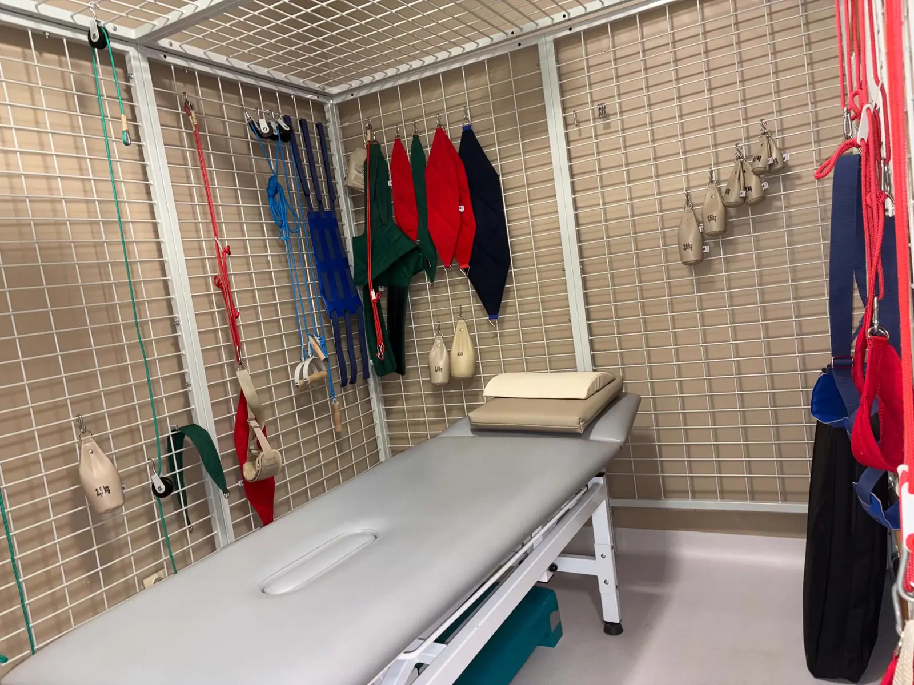
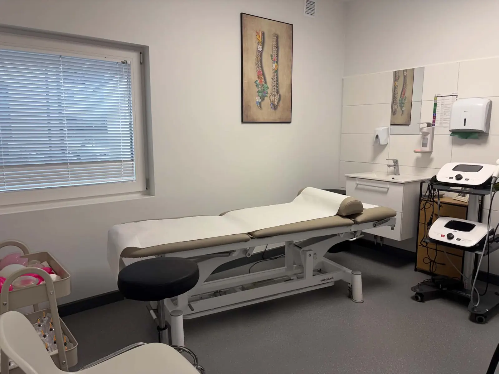
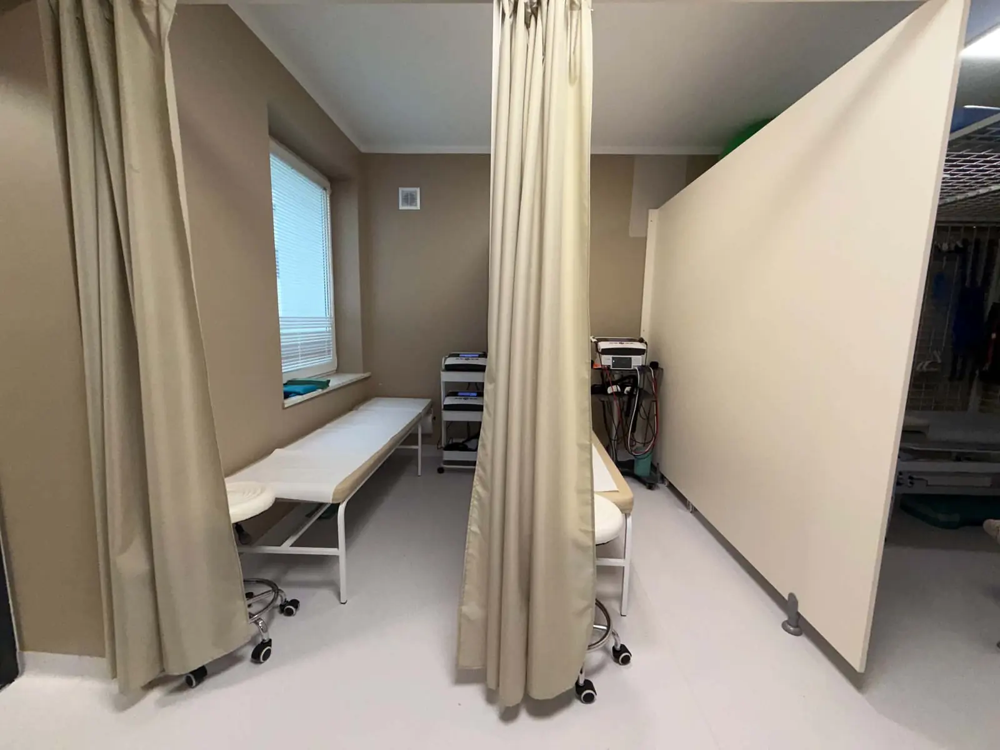
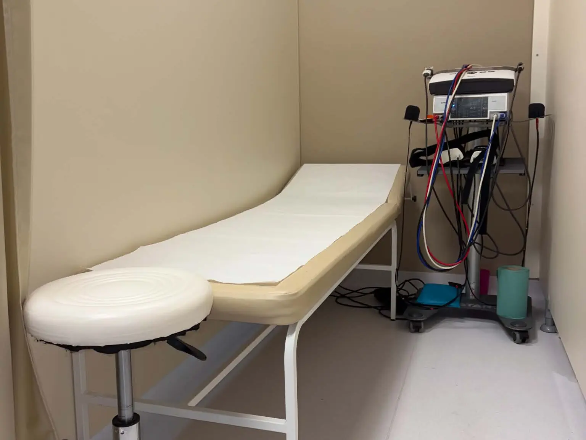
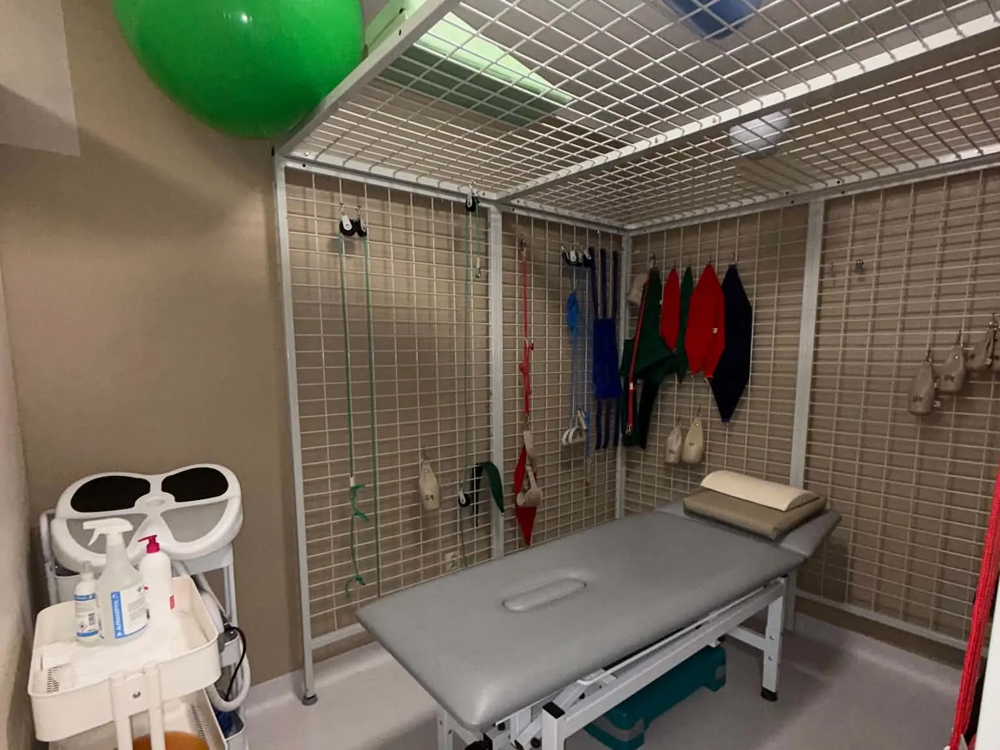
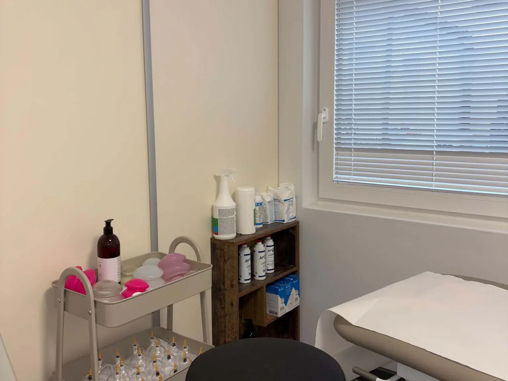

Laser wysokoenergetyczny (HILT)
Głęboko penetruje tkanki. Działa przeciwbólowo, przeciwzapalnie i regenerująco, w stanach ostrych i przewlekłych.
ul. Dr. L. Rutkowskiego 6, 09-100 Płońsk
Rejestracja: 731 100 801
Prywatny Gabinet Fizjoterapii mgr Magdaleny Szewczyk. Rehabilitacja dorosłych i młodzieży po urazach, operacjach i w chorobach neurologicznych.
Każdą terapię poprzedza dokładna diagnostyka funkcjonalna i wywiad medyczny.








Głęboko penetruje tkanki. Działa przeciwbólowo, przeciwzapalnie i regenerująco, w stanach ostrych i przewlekłych.
Przewlekłe stany zapalne, zwapnienia i zmiany przeciążeniowe, np. ostroga piętowa, łokieć tenisisty.
Pole elektromagnetyczne głęboko ogrzewa tkanki, rozszerza naczynia, rozluźnia bolesne skurcze mięśni.
Zmniejsza obrzęki, wspomaga drenaż limfatyczny i krążenie krwi.
Prądy lecznicze, m.in. TENS, interferencyjne i diadynamiczne: stymulują mięśnie i blokują bodźce bólowe.
Wspomagają zrost kostny, gojenie i regenerację tkanek.
Drenaż pneumatyczny kończyn przy obrzękach.
Także terapia mięśniowo-powięziowych punktów spustowych przy bólu rzutowanym.
Taśmy wspomagające pracę mięśni, stabilizujące stawy, zmniejszające ból, obrzęki i krwiaki.
Rozluźnianie napięć powięziowych.
Wieloletnie doświadczenie w pracy z pacjentami ortopedycznymi, neurologicznymi i po urazach. Indywidualne podejście do każdego problemu zdrowotnego.